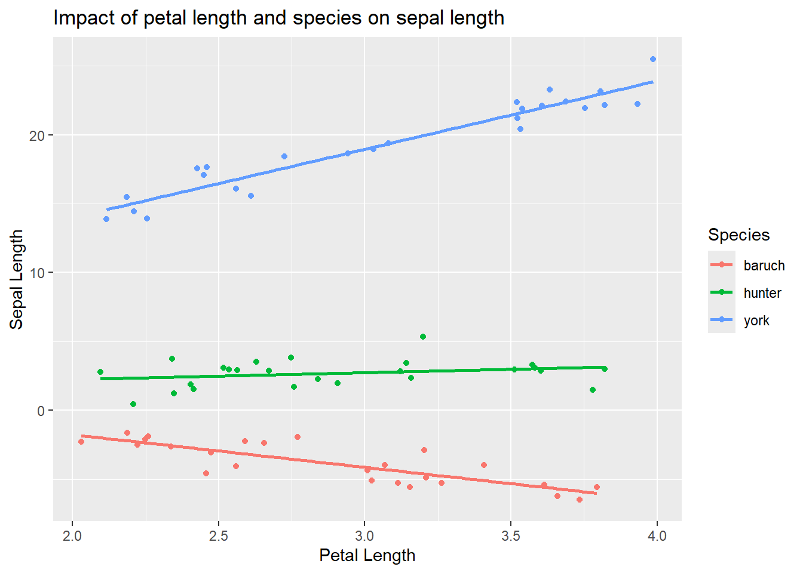

set.seed(3)
iris_example_species <-data.frame(
Species = c(rep("baruch",25), rep("hunter", 25), rep("york", 25)),
Petal_Length = runif(75,2,4 ))
set.seed(31)
iris_example_species$Sepal_interaction <-
iris_example_species$Petal_Length * c(rep(-2, 25),rep(0,25), rep(5,25)) +
c(rep(2,25), rep(3,25), rep(4,25)) + rnorm(75)Combining (lots of) numerical and categorical predictors
ANCOVAs and beyond
Remember you should
- add code chunks by clicking the Insert Chunk button on the toolbar or by pressing Ctrl+Alt+I to answer the questions!
- knit your file to produce a markdown version that you can see!
- save your work often
- commit it via git!
- push updates to github
Example
Following the iris example from class
Plot the data
library(ggplot2)
ggplot(iris_example_species, aes(x= Petal_Length, y = Sepal_interaction, color = Species)) +
geom_point()+
ylab("Sepal Length") +
xlab("Petal Length") +
ggtitle("Impact of petal length and species on sepal length") +
geom_smooth(method = "lm", se = F)`geom_smooth()` using formula = 'y ~ x'
Analysis would indicate (assumption plots not shown here to allow focus on interpreting interactions)
library(car)Loading required package: carDataAnova(lm( Sepal_interaction~ Petal_Length * Species, iris_example_species),
type = "III")Anova Table (Type III tests)
Response: Sepal_interaction
Sum Sq Df F value Pr(>F)
(Intercept) 7.076 1 8.0267 0.006038 **
Petal_Length 38.452 1 43.6177 6.88e-09 ***
Species 3.353 2 1.9015 0.157092
Petal_Length:Species 227.334 2 128.9368 < 2.2e-16 ***
Residuals 60.828 69
---
Signif. codes: 0 '***' 0.001 '**' 0.01 '*' 0.05 '.' 0.1 ' ' 1interactions do exist. This means we can’t interpret the “general” relationship, so we need to look for each species using regression.
summary(lm(Sepal_interaction ~ Petal_Length,
iris_example_species[iris_example_species$Species == "baruch",]))
Call:
lm(formula = Sepal_interaction ~ Petal_Length, data = iris_example_species[iris_example_species$Species ==
"baruch", ])
Residuals:
Min 1Q Median 3Q Max
-1.7194 -0.5504 -0.1860 0.4736 1.7067
Coefficients:
Estimate Std. Error t value Pr(>|t|)
(Intercept) 2.9734 0.9767 3.044 0.00576 **
Petal_Length -2.3663 0.3335 -7.097 3.14e-07 ***
---
Signif. codes: 0 '***' 0.001 '**' 0.01 '*' 0.05 '.' 0.1 ' ' 1
Residual standard error: 0.8738 on 23 degrees of freedom
Multiple R-squared: 0.6865, Adjusted R-squared: 0.6728
F-statistic: 50.36 on 1 and 23 DF, p-value: 3.144e-07Anova(lm(Sepal_interaction ~ Petal_Length,
iris_example_species[iris_example_species$Species == "baruch",]),
type="III")Anova Table (Type III tests)
Response: Sepal_interaction
Sum Sq Df F value Pr(>F)
(Intercept) 7.076 1 9.2676 0.005758 **
Petal_Length 38.452 1 50.3604 3.144e-07 ***
Residuals 17.561 23
---
Signif. codes: 0 '***' 0.001 '**' 0.01 '*' 0.05 '.' 0.1 ' ' 1summary(lm(Sepal_interaction ~ Petal_Length,
iris_example_species[iris_example_species$Species == "hunter",]))
Call:
lm(formula = Sepal_interaction ~ Petal_Length, data = iris_example_species[iris_example_species$Species ==
"hunter", ])
Residuals:
Min 1Q Median 3Q Max
-1.89221 -0.58055 0.00876 0.47006 2.49756
Coefficients:
Estimate Std. Error t value Pr(>|t|)
(Intercept) 1.2564 1.1463 1.096 0.284
Petal_Length 0.4962 0.3895 1.274 0.215
Residual standard error: 0.9902 on 23 degrees of freedom
Multiple R-squared: 0.06589, Adjusted R-squared: 0.02528
F-statistic: 1.622 on 1 and 23 DF, p-value: 0.2155Anova(lm(Sepal_interaction ~ Petal_Length,
iris_example_species[iris_example_species$Species == "hunter",]),
type="III")Anova Table (Type III tests)
Response: Sepal_interaction
Sum Sq Df F value Pr(>F)
(Intercept) 1.1779 1 1.2014 0.2844
Petal_Length 1.5907 1 1.6224 0.2155
Residuals 22.5503 23 summary(lm(Sepal_interaction ~ Petal_Length,
iris_example_species[iris_example_species$Species == "york",]))
Call:
lm(formula = Sepal_interaction ~ Petal_Length, data = iris_example_species[iris_example_species$Species ==
"york", ])
Residuals:
Min 1Q Median 3Q Max
-1.45150 -0.69660 0.02717 0.83006 1.64698
Coefficients:
Estimate Std. Error t value Pr(>|t|)
(Intercept) 4.0617 0.9550 4.253 3e-04 ***
Petal_Length 4.9642 0.3024 16.417 3.4e-14 ***
---
Signif. codes: 0 '***' 0.001 '**' 0.01 '*' 0.05 '.' 0.1 ' ' 1
Residual standard error: 0.9491 on 23 degrees of freedom
Multiple R-squared: 0.9214, Adjusted R-squared: 0.918
F-statistic: 269.5 on 1 and 23 DF, p-value: 3.401e-14Anova(lm(Sepal_interaction ~ Petal_Length,
iris_example_species[iris_example_species$Species == "york",]),
type="III")Anova Table (Type III tests)
Response: Sepal_interaction
Sum Sq Df F value Pr(>F)
(Intercept) 16.292 1 18.087 0.0002998 ***
Petal_Length 242.770 1 269.527 3.401e-14 ***
Residuals 20.717 23
---
Signif. codes: 0 '***' 0.001 '**' 0.01 '*' 0.05 '.' 0.1 ' ' 1Here we see that there is a significant negative relationship (F1,23 = 50.36, p<0.001) between sepal and petal length for I. baruch, a significant positive relationship (F1,23 = 269.53, p<0.001) between sepal and petal length for I. york,and no relationship (F1,23 = 1.63, p<-0.21) between sepal and petal length for I. hunter.
Practice
1
Data on FEV (forced expiratory volume), a measure of lung function, can be found at
http://www.statsci.org/data/general/fev.txt
More information on the dataset is available at
http://www.statsci.org/data/general/fev.html.
Does the impact of age on FEV differ among genders? Consider how your answer to this differs from the previous assignment!
2
Data on home gas consumption at various temperatures before and after new insulation was installed has been collected @
http://www.statsci.org/data/general/insulgas.txt
More information on the data is available @
http://www.statsci.org/data/general/insulgas.html
Is there any relationship between these factors? How would you test this, and what type of plot would you produce to accompany your analysis?
3
Data on the height, diameter, and volume of cherry trees was collected for use in developing an optimal model to predict timber volume. Data is available @
http://www.statsci.org/data/general/cherry.txt
Use the data to justify an optimal model.
4
Over the course of five years, a professor asked students in his stats class to carry out a simple experiment. Students were asked to measure their pulse rate, run for one minute, then measure their pulse rate again. The students also filled out a questionnaire. Data include:
| Variable | Description |
|---|---|
| Height | Height (cm) |
| Weight | Weight (kg) |
| Age | Age (years) |
| Gender | Sex (1 = male, 2 = female) |
| Smokes | Regular smoker? (1 = yes, 2 = no) |
| Alcohol | Regular drinker? (1 = yes, 2 = no) |
| Exercise | Frequency of exercise (1 = high, 2 = moderate, 3 = low) |
| Change | Percent change in pulse (pulse after experiment/pulse before experiment) |
| Year | Year of class (93 - 98) |
Using the available data (available at
https://docs.google.com/spreadsheets/d/e/2PACX-1vToN77M80enimQglwpFroooLzDtcQMh4qKbOuhbu-eVmU9buczh7nVV1BdI4T_ma-PfWUnQYmq-60RZ/pub?gid=942311716&single=true&output=csv )
determine the optimal subset of explanatory variables that should be used to predict change pulse rate (Change) (focusing on main effects only, no interactions) and explain your choice of methods. Interpret your results. Make sure you can explain any changes you needed to make to the dataset or steps you used in your analysis.
5
Find one example of model selection from a paper in your field. It may be more complicated (see next question!) than what we have done, but try to identify the approach (F/AIC, top-down/bottom-up/not nested) they used. Review how they explained their approach (methods) and reported outcomes (results). Be prepared to discuss in class next week.
6
Find one example of a linear model selection (e.g., generalized linear models, mixed-effects models, beta regression) from a paper in your field. Be prepared to name the technique in class next week.